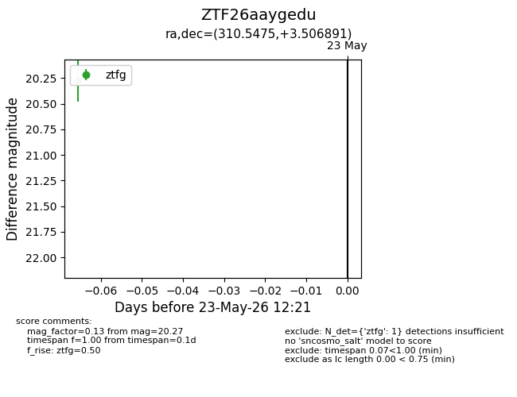
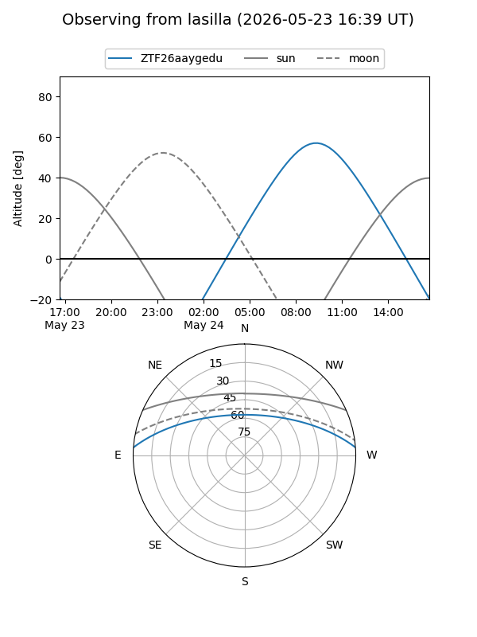
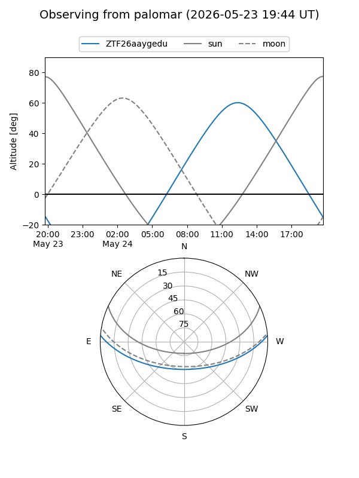

ZTF26aaygedu
Target ZTF26aaygedu at 2026-05-23 12:23
Aliases and brokers:
lsst-FINK: link
lsst-Lasair: link
lsst-ALeRCE: link
ztf-FINK: link
ztf-Lasair: link
ztf-ALeRCE: link
alt names
ZTF26aaygedu (ztf,fink_ztf)
Coordinates:
equatorial (ra, dec) = 310.5475,+3.50689
equatorial (HMS+DMS) = 20:42:11.39,+03:30:24.81
galactic (l, b) = (49.6769,-22.63581)
Flags:
Photometry:
last ztfg=20.27
1 ztfg detections
Lightcurve

Visibility


Additional plots